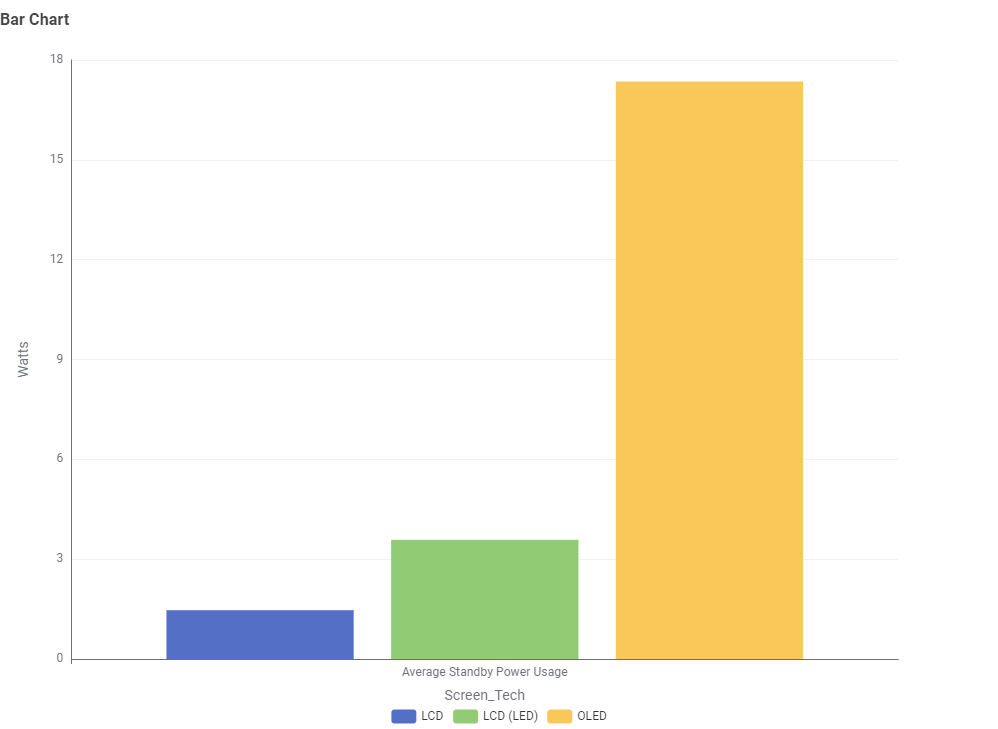
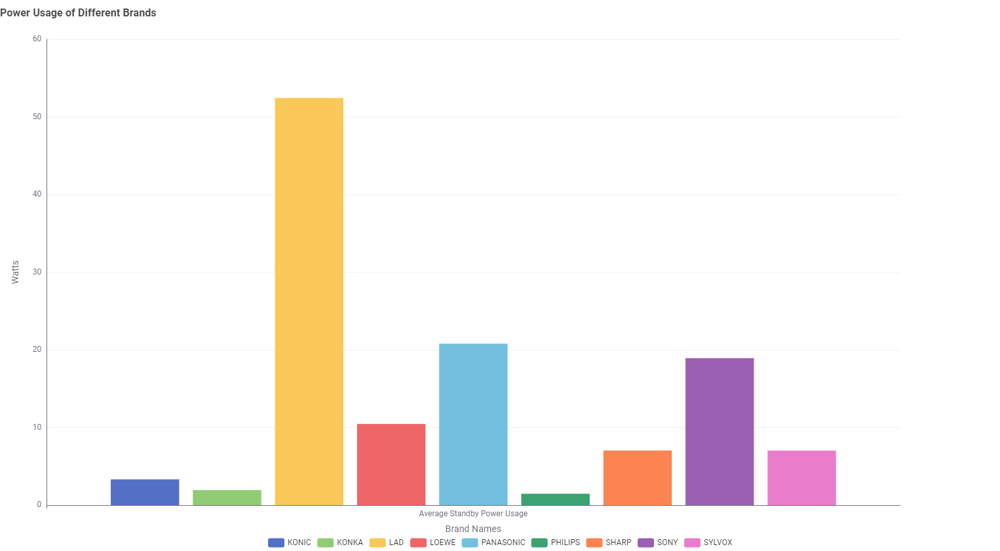
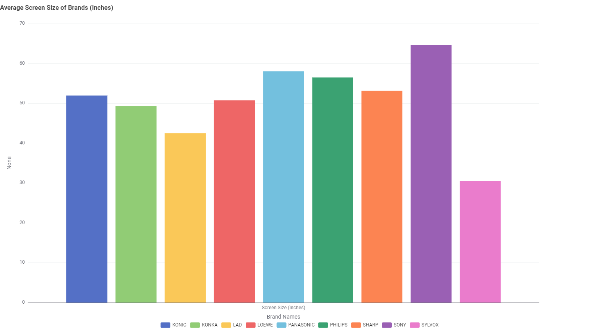

Televisions
A comparison of energy usage between screen technologies
The above visualisation shows the average active standby power usage in watts of the different technologies available for television screens.
A comparison of average brand power usage and relative average screen size
The above visualisations show the averaged active standby power usage in watts for all models of the filtered brands. To help give context and give a relative view the average screen size of all models of the filtered brands are also shown.